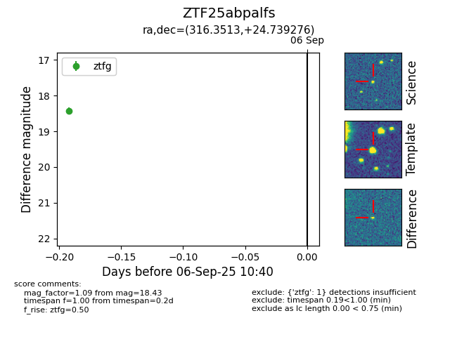

FINK: ZTF25abpalfs
Lasair: ZTF25abpalfs
ALeRCE: ZTF25abpalfs
ZTF25abpalfs (ztf,fink)
equatorial (ra, dec) = (316.3513,+24.73928)
galactic (l, b) = (71.3621,-14.78625)

last ztfg=18.43, ztfr=17.86
1 ztfg, 1 ztfr detections